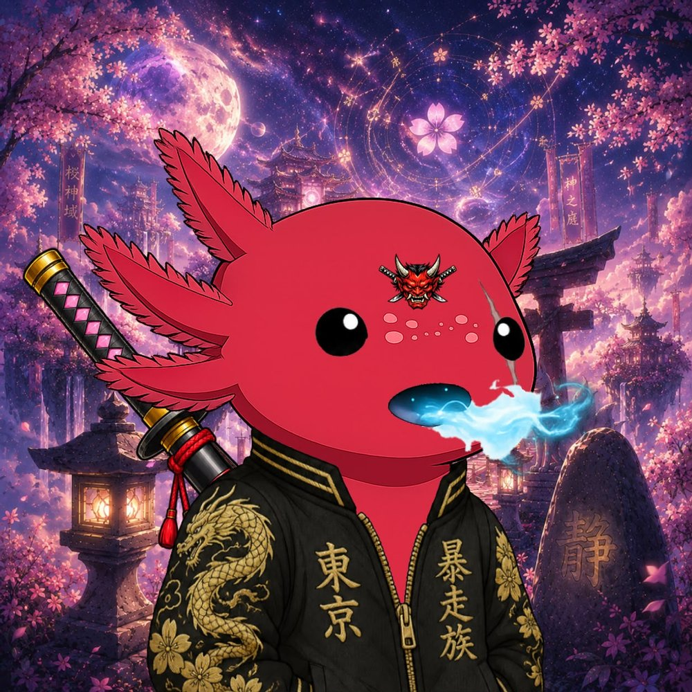
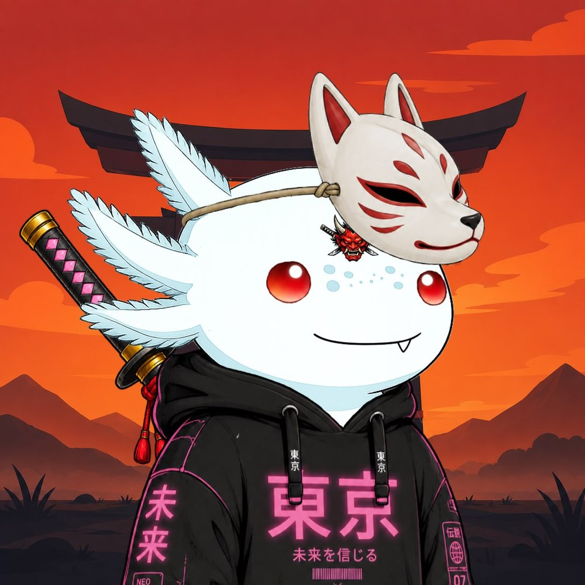
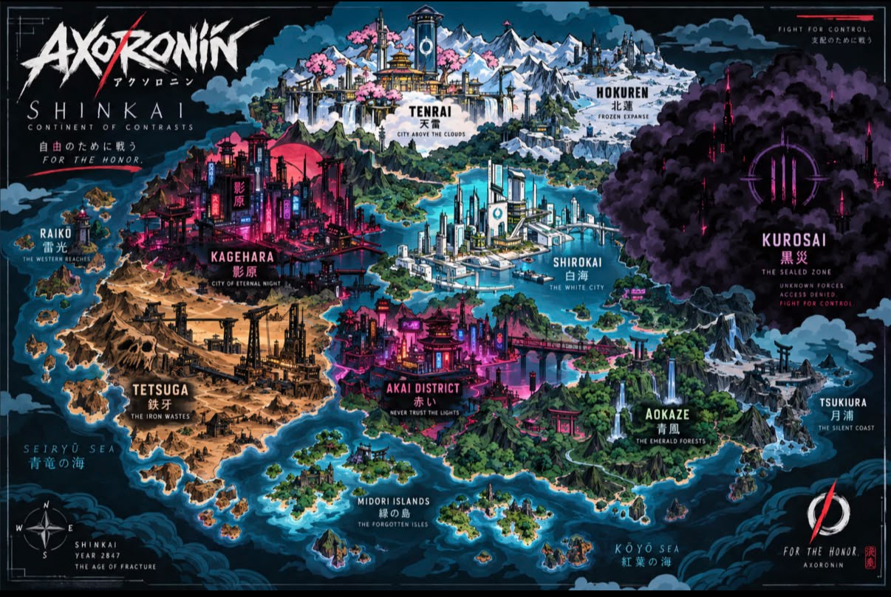
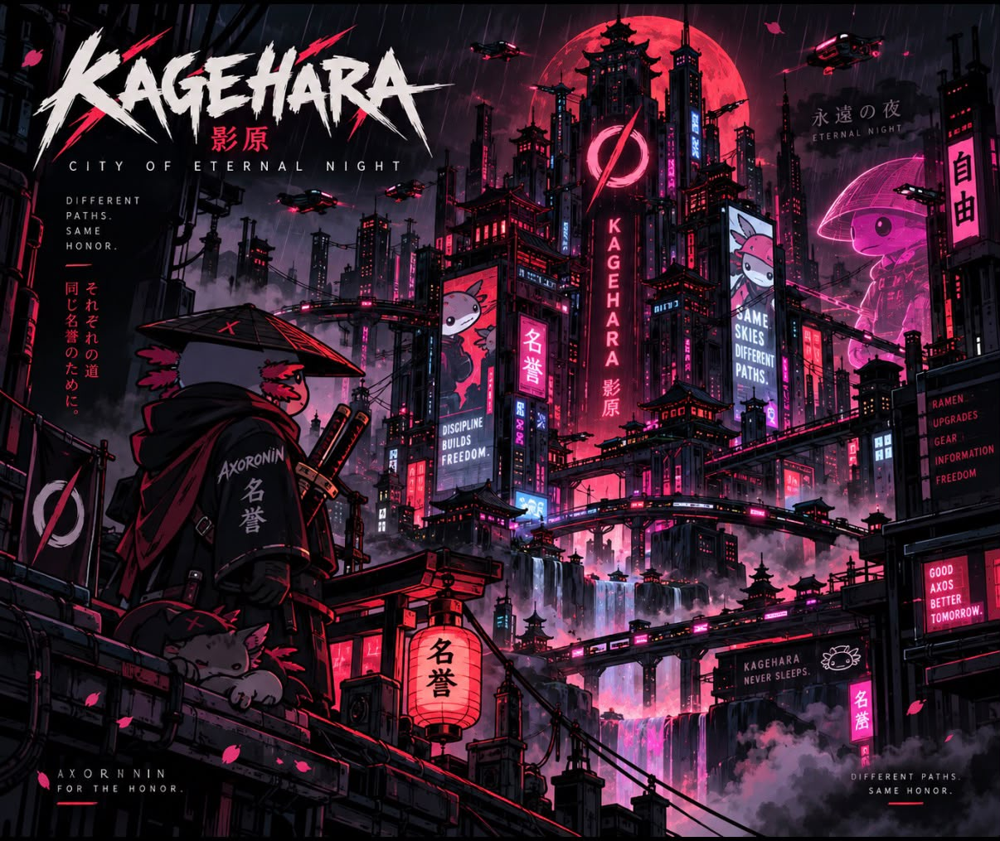
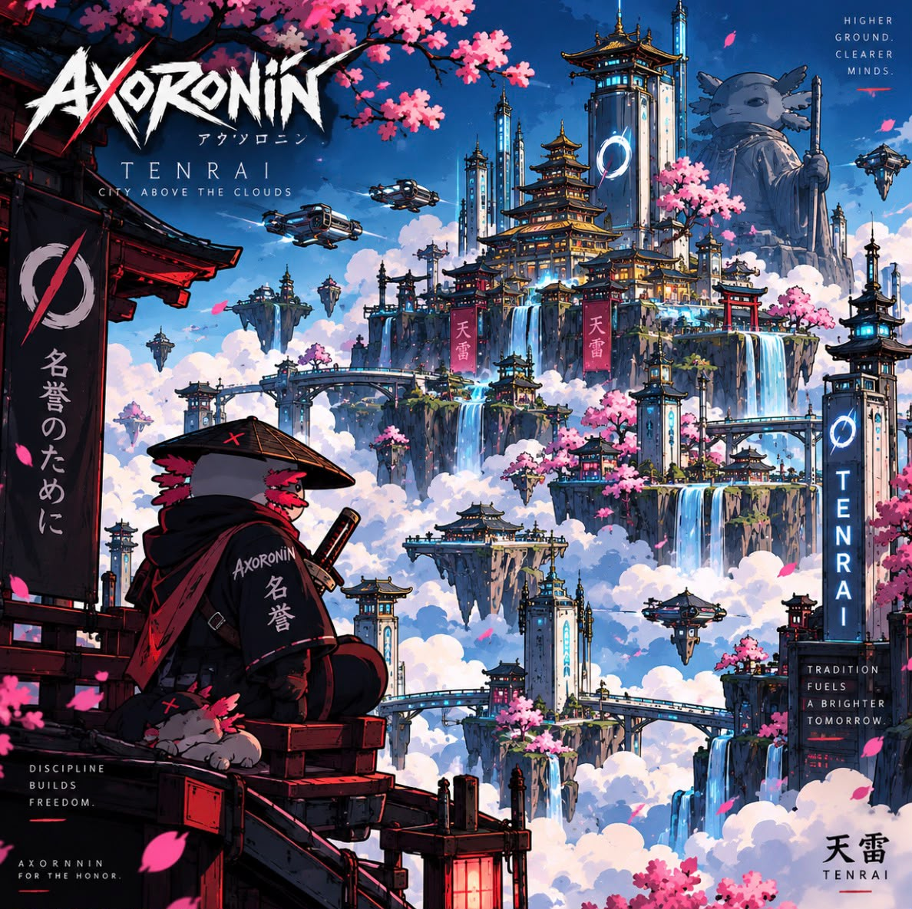
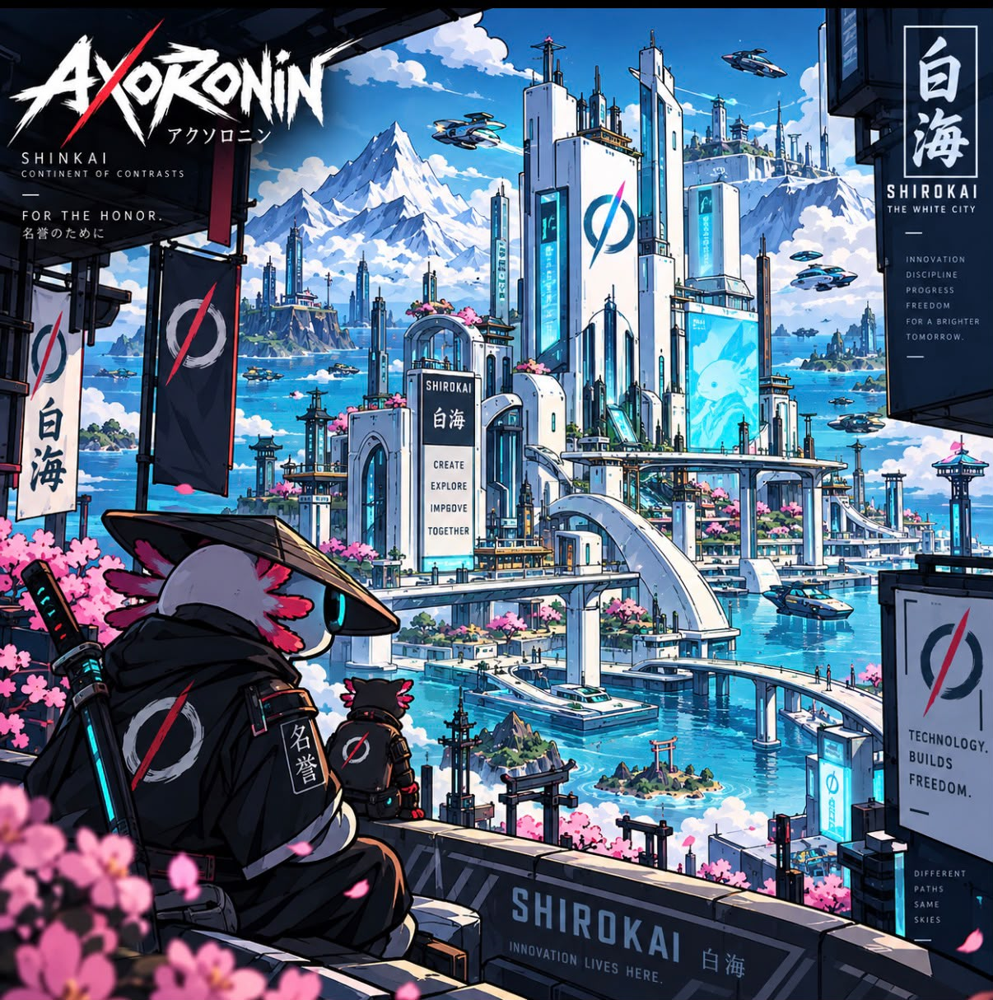
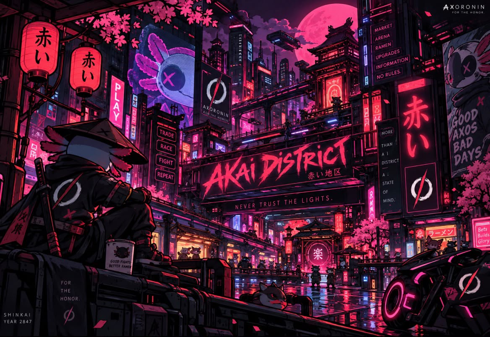
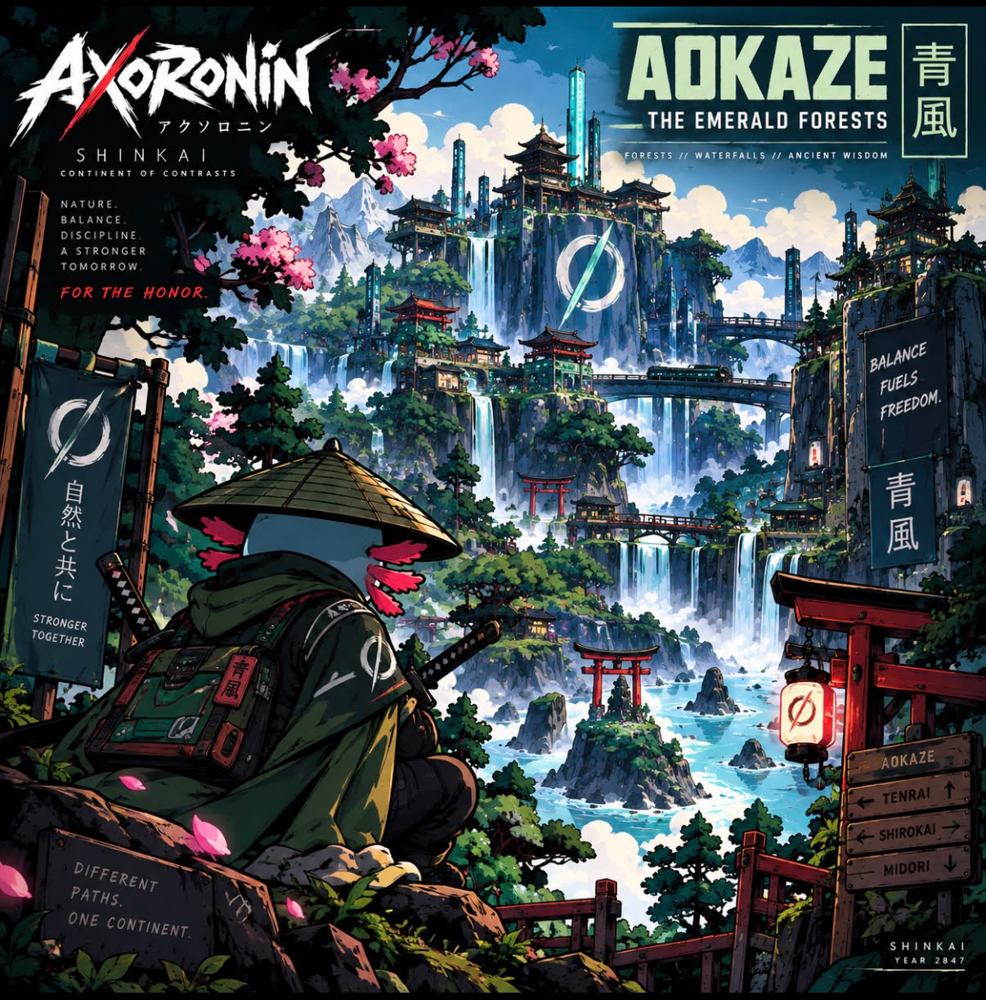
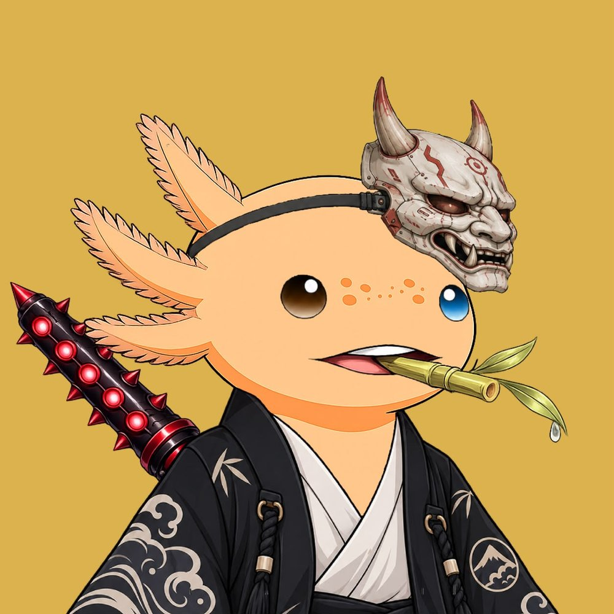
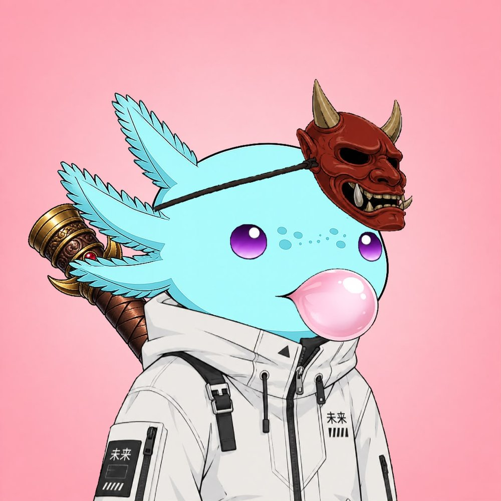

THE AWAKENING
The city was never silent.
Beneath the neon lights, ancient traditions survived in the shadows.
Then they appeared.
The AxoRonin.

A community-driven NFT collection where Japanese culture, cyberpunk aesthetics, and the chaotic charm of axolotls collide.
In the neon shadows of a city where ancient honor meets digital chaos, a new clan rises.
AxoRonin is a community-driven NFT collection inspired by Japanese culture, cyberpunk aesthetics, and the unique charm of axolotls.
Original characters, traits, visual identity and storytelling, built for the AxoRonin universe and nothing else.
A universe inspired by ronin legends, Japanese symbolism and the futuristic cities they now wander.
The Ronin Clan helps shape the future of the AxoRonin universe: its lore, its drops, its direction.
We believe NFTs are more than digital collectibles. They're a way to express identity, creativity, and community.
AxoRonin is built for collectors who appreciate art, culture, and long-term growth over short-term hype.

Every Ronin has a story. Every trait has a purpose. A first look at the characters of the clan.
No two Ronin are exactly alike.
A journey built one chapter at a time.
The AxoRonin emerge from the neon shadows. Lore, identity and the Clan take shape.
The journey begins with public mint, holder verification and first rewards.
Community-led growth, seasonal drops, collaborations, and the long-term story.
The community is at the heart of the project.
Original art, storytelling and creative expression.
Clear communication and realistic expectations.
Focus on quality rather than unnecessary expansion.
Created for people who genuinely appreciate the art and universe.
We are not here to promise impossible outcomes or manufacture artificial hype.
AxoRonin is focused on building a recognizable universe through creativity, transparency, collaboration and consistent development.
The city is waiting.
Every clan begins with a single night. This is where the AxoRonin story starts. The rest is still being written, together with the Ronin Clan.
A continent of neon megacities, ancient temples, frozen mountains and forgotten islands where every AxoRonin is free to choose their own path.
FOR THE HONOR.

Far beyond the memory of the oldest records lies Shinkai. Its inhabitants are AxoRonins: warriors, travelers, builders, hackers and guardians who have spent generations building cities, exploring the continent and protecting the freedom that defines their way of life.
Some live beneath Kagehara's endless neon lights. Others guard the temples above the clouds in Tenrai, or travel alone across the Iron Wastes. Wherever their journey takes them, every AxoRonin knows the words that connect their kind: For the Honor.
The AxoRonins have no emperor and no single ruler. They choose their own paths, but freedom does not mean chaos.
FOR THE HONOR.
Long ago, vast networks connected every city: energy, transportation, communication and technology. Then came the Fracture. Records were destroyed, systems collapsed and entire cities went dark.
When the systems returned, Shinkai had changed forever. Its people rebuilt, but made one promise: never again would the whole continent be controlled by a single system.
Kagehara is Shinkai's beating neon heart: a rainy labyrinth of gigantic towers, holographic signs, ramen stalls, workshops and underground markets.
AxoRonins from every corner of the continent pass through to find work, information or to disappear into the endless city. Above the streets, ancient rooftop dojos preserve techniques passed down from before the Fracture.


High above the mountains, Tenrai spans enormous floating platforms where ancient temples meet advanced technology. Cherry blossoms grow beside energy towers, and bridges link districts drifting through the clouds.
At its highest point stands the Shrine of Honor, where legend says the first AxoRonin Code was written. Its ancient stone bears the Broken Circle.
On the eastern coast, white metal, glass and blue technology make Shirokai the technological center of Shinkai. Weapons, cybernetic enhancements, vehicles and energy systems are born here.
It appears peaceful from the outside. Beneath its streets lie hidden workshops, experimental technology, forgotten laboratories and machines whose purpose even their creators no longer understand.


Akai never sleeps. Street races thunder through narrow alleys, underground arenas draw warriors from across Shinkai, and rare technology, weapons and information are always available for the right price.
But every AxoRonin entering Akai learns the same lesson: the brightest places often hide the darkest secrets.
The emerald forests are a green refuge of mountain temples, waterfalls and bridges. Aokaze is a vivid reminder that Shinkai's old wisdom and wild places remain part of its future.

Beyond an enormous wall of black metal lies permanent darkness. No AxoRonin settlement exists inside; no traveler who crossed the boundary has ever returned. For centuries, Kurosai remained silent.
UNTIL 2847.
For the first time in 117 years, every light in Kagehara goes dark. For eight seconds there is silence. When the city returns, every screen bears an unfamiliar mark: a closed circle, cut by three vertical lines.
“Freedom created chaos.
Chaos created division.
Division created weakness.”
A final sentence appears across every screen: CONTROL WILL BRING ORDER.
FIGHT FOR CONTROL.
The signal is traced across the continent to the black clouds surrounding Kurosai. Towers beyond the wall begin to glow. Unknown machines move beneath the fog, and systems dormant since the Fracture activate across Shinkai.
Kurosai was never abandoned. Something has been waiting, something that sees freedom not as a right, but as a flaw.
FOR THE HONOR.
SIGNAL DETECTED // KUROSAI
THREAT LEVEL: UNKNOWN
TO BE CONTINUED.
View every AxoRonin on our official NFT collection page.
Discover the full AxoRonin collection on Exclusivo, our official marketplace.
View the NFT CollectionA selection of AxoRonin artwork. Click any Ronin to view it larger.
A journey built one chapter at a time.
"The AxoRonin emerge from the neon shadows."
"The journey begins."
"A strong community is stronger than any roadmap."
"The city never sleeps."
"A Ronin's journey never truly ends."
Roadmap milestones represent the current direction of AxoRonin and may evolve based on development, community feedback and project conditions.
The Ronin Clan is the heart of AxoRonin.
Community and holder benefits are still being finalized. These are the directions we're building toward, not guarantees beyond what AxoRonin officially confirms.
Create and share your interpretation of the Ronin.
Bring chaos to the Clan.
Participate in special events and campaigns.
Help shape future expansions.
Discover special digital collectibles.
Connect with artists and Web3 communities.
Every Ronin carries a name forged from honor and code. Choose your style and claim yours.
Your Ronin name awaits.
Official figures, updated as the Clan grows.

Some Ronin journeys may leave the screen.
Selected campaigns and milestones may feature limited physical AxoRonin collectibles, including 3D-printed pieces. This is not a guarantee that every holder automatically receives physical merchandise.
Bring your creativity. Bring your chaos.
AxoRonin exists to build a recognizable universe at the intersection of Japanese culture, cyberpunk aesthetics, and the unexpected charm of axolotls. We see NFTs as more than digital collectibles. They are a way to express identity, creativity, and belonging to something built collectively.
Our vision is long-term: a world that grows through art, lore, and an active community rather than short-term hype cycles.
AxoRonin is a generative NFT collection combining original character art, Japanese-inspired symbolism, and cyberpunk environments. Traits span backgrounds, armor, eyes, and accessories, giving every Ronin its own identity within the wider universe.
The Ronin Clan is the community layer of AxoRonin: the people who follow the lore, shape decisions, create fan content, and help the universe grow. Community input is intended to influence future expansions, seasonal drops, and storytelling direction.
Our mission is to build AxoRonin around quality over hype, and community over numbers. We prioritize authentic creativity, transparent communication, and sustainable, long-term development over unrealistic promises or short-term financial narratives.
The Ronin Journey is structured across five phases: The Awakening, The Mint, The Ronin Clan, Neon Expansion, and Legacy. Full details live on the Roadmap page. Roadmap milestones represent current direction and may evolve based on development, community feedback and project conditions.
Everything you need to know before you mint. Official mint details are announced first on Discord and X.
